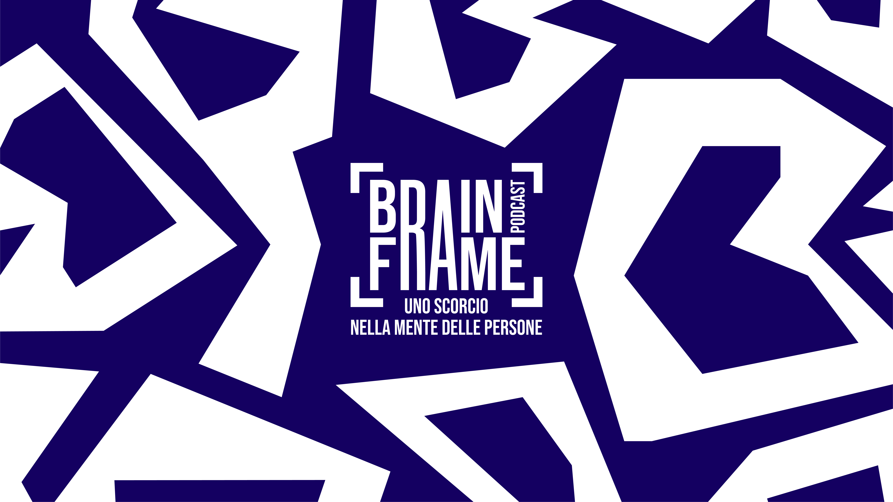

Progetto editoriale
BRAINFRAME
Trasformiamo argomenti scientifici complessi in contenuti chiari, visivi e coinvolgenti.
Guarda i lavori ↓01
Il progetto
UNO SCORCIO NELLA MENTE DELLE PERSONE.
BrainFrame è un progetto di divulgazione che racconta psicologia, tecnologia e scienza attraverso video pensati per i social media.

02
Il mio ruolo
AUTORE E CREATIVE PRODUCER.
Seguo ricerca, sviluppo del concept, scrittura, riprese, montaggio, pubblicazione e strategia dei contenuti.
03
Lavori selezionati
VIDEO E CONTENUTI.
Qui inseriremo i video e i lavori realizzati per BrainFrame.